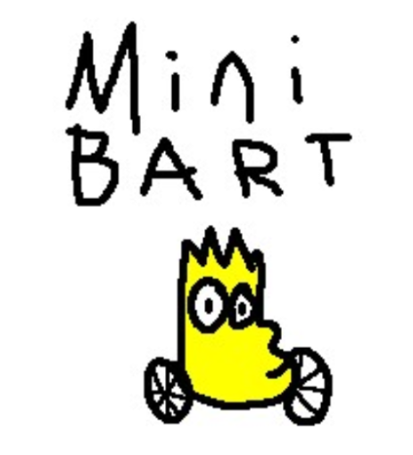
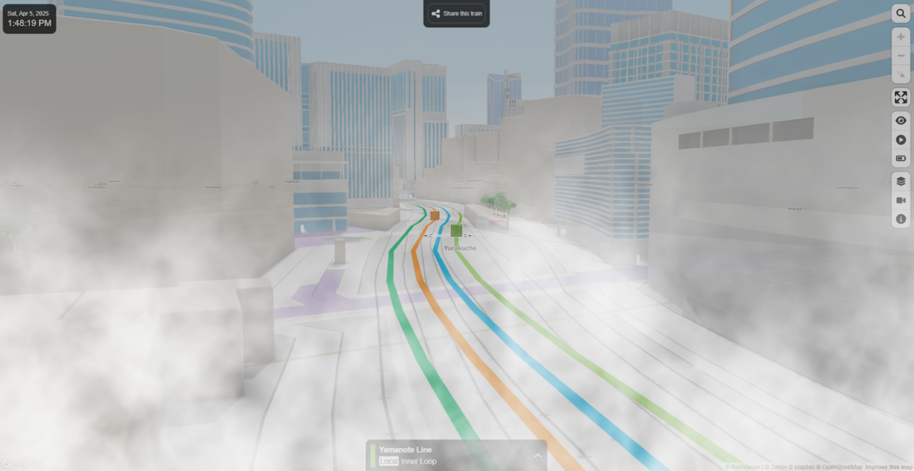

|

|
Our project is a real-time map web-app of the Bay Area, utilizing APIs to source geographic info and Three.js for rendering. Our main feature is real-time ray marching, used to render fog and BART train locations. We plan to implement this using Three.js as our engine, fed with info from BART Developer Resources.
Our project idea was inspired by MiniTokyo3D, a web simulation of the Tokyo train systems. MiniTokyo accomplishes this by using a Public Transportation API to fetch real-time train locations, creating a 3D map of Tokyo and its train via various web frameworks. We want to create something similar: a real-time simulation focused on the BART that uses 3D graphics to create an engaging and informative user experience.
Traveling in the Bay Area can be greatly affected by weather conditions, which can affect how one dresses for travel and whether public transportation runs on time. Our goal is to create a simulation that provides quick, clear, and precise information about fog and transit conditions. We want to present this information in a 3D simulation with fast and visually interesting graphics. It can be a challenge accomplishing this within a web context, as computation resources are often more limited, and fast-rendering languages (like C++) aren’t directly interfaceable in a web context. Because of this, a key area of expected difficulty will be implementing and optimizing 3D approaches that balance visual fidelity with available processing resources. We plan to solve this by using lower-cost solutions to problems when available, using methods such as ray-marching instead of path tracing.
Since we want to design a web app, we will have to account for technical limitations of the more complex algorithms taught in class. For example, implementing a complete real-time path tracer over the scene would be too computationally expensive. Instead, we are planning on exploring more lightweight options. Ray marching will be explored as an alternative, which can still produce visually compelling results while remaining performant enough for real-time rendering on the web. This approach should be well suited for effects like fog, which can be rendered more effectively without the overhead of complex geometry or lighting models. Raymarching will also be used for rendering the 3D models of the BART trains.
In our demo we plan to walkthrough our web application, showcasing a map of the bay area with moving 3D objects representing BART trains with lighting and shading. We will show examples of areas with our custom rendered fog, possibly with settings we can toggle to play around with different effects. We want to answer the question of what limits web-based graphical processing has when implementing rendering methods like ray marching.
Our baseline plan for the project is specifically to create custom rendered fog and lighting in a bay area BART map simulator using Three.js. Performance and quality will be measured via accuracy of simulations (mapping trains in the simulation to real-world locations) and render times allowing sufficient FPS in-browser (with a rough goal as (5-30fps). We expect ray marching to run well in browsers, but if we experience struggles rendering the bay, we may explore downgrading some rendering (like fog) to some other method, like real time rasterization.
If things go well enough, our aspirational plan includes rendering other forms of real time transportation information (such as buses) and implementing other weather effects (like rain). Rendering buildings in 3D would also be a nice feature, depending on how much additional processing requirements it adds to the scene.
The following image is a photoshopped edit of a MiniTokyo screenshot, showing what we expect a rendered scene of our project to look like in a very general sense. Note the foggy scene and 3D train cars.
|  |
March 30 - April 4: Finalize project idea and draft proposal
April 4 - April 7: Set up the repository and experiment with the frameworks/tools we plan to use like Three.js, BART API, OpenWeather, etc, and watch the crash course Youtube video. Divide tasks such as fog rendering and transit API
April 8 - April 14: Create a base Three.js map, it can be dummy buildings instead of using the map API. Complete a simple, baseline implementation of rasterized fog. Formally begin drafting milestone deliverables.
April 15 - April 20 (GRADED MILESTONE DUE): Add animations to train movement, start integrating the 511 API. The website should be rough, but a working prototype. Finish drafting milestone deliverables.
April 21 - April 27: Start polishing the prototype. Implement refinements such as ray marching to make BART trains’ lighting more realistic. Implement conditional fog rendering with weather API.
April 28 - May 4 (FINAL DELIVERABLES DUE): Final touches. Add different types of buildings, and more advanced train models to make it more visually appealing. Implement any necessary web optimizations.
Since we are considering building this as a web application mostly with Three.js, we are largely limited to what browsers can accomplish in real time. This also means that we need to be mindful of the wide range of devices with varying specifications that may access the website. For the purposes of developing and testing the website, however, we plan to use our own laptops (Mac and Windows).
We will use an online service to host the web app. We plan to source web data from a free API and handle it ourselves using Three.js for rendering.
We plan to use available online resources such as documentation, tutorials, articles, etc.
The following are examples that we’ve drawn inspiration from or plan to use for conceptual/technical understanding: